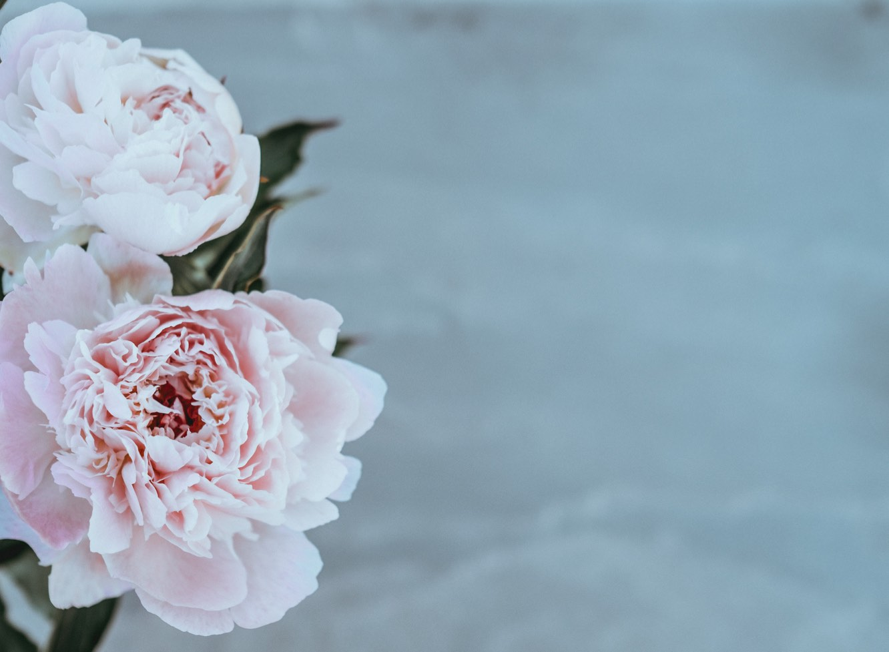

| アナスタシアによせて ２ 原初のライフスタイル | |
| 堀田真紀子 | |
| (2017) | |
チャプタ 1

歴史の真相へのアプローチ法
アナスタシアによると、現行のいわゆる「歴史」は、権力者の都合のよいようにかなり歪曲されている。その洗脳を解き、本当のことを知りたければ、とりあえず学校で学んだことも、テレビで見たことも、みんなが常識にしていることも含め、誰かから聞いたことは、一切合切、まずは棚にあげる。
その上で、これまでの人生で、自分が直接見聞きして来た過去の情報だけを、ふるいにかけ、それだけについて集中して考えてみるのがいい。たとえば、自分の祖父母をはじめとした、お年寄りの暮らし方、彼らから直接聞いた昔の話をつぶさに思い出してみる。
アナスタシアが『一族の書』の中で語っていたような、祖先代々の人が子孫に向けて代々書いて来た手紙をあつめたものなどがあると、役に立つかもしれない。
一族の書とは、それぞれの人が自分の子孫に向けて書く本で、自分が人生で学んだことで、子孫に伝えたいことを、愛情をこめて書き留めていった記録を集大成したもの。アナスタシアの提案は、生まれた子供が、学校教育やマスメディアにさらされて、画一的な教育にさらされる前に、まずはこの家族の本をテキストにして、世界について、自分について学ぶこと。つまり、他の動物だったら、本能や習性に落とし込んだDNAに書き込まれた祖先の経験を、学習するわけである。それは自分が何者かをあらためて知ることにもつながるのはもちろん、家族がながらく同じ場所に定住している場合は、ちょっとした郷土史の宝庫になるだろう。よく、戦争中のおじいさんがどんな風に九死に一生を免れたかとか、食糧難の時代、おばあさんがどうやって食べ物を手に入れたかなど、断片的な祖先の話だったら、私たちもことあるごとに聞くことがある。それを組織的にやるわけだ。政治家や英雄といった偉い人を中心にした、学校で教わる公認の画一的な歴史とはまた別の、自分にとても近い具体的な人物の目線で見られ、体験された生きた歴史がそこにある。しかも、彼らがなんとか生き延びていき、どんなふうにして人生の伴侶に出会い、家族をいとなみはじめる話は、お話として面白いだけでなく、そのおかげで今の自分が生まれてきた、すべて自分の存在に直結した話でもある。
しかし子供がまず「家族の本」をテキストにして学ぶことは、祖先の通りに暮らし続けなければならない保守主義を意味するわけでは、必ずしもない。祖先のしたこと、考えたことは必ずしもすべて手本になるわけではなく、反面教師的な教訓をもたらすことだってあるだろう。
今、いきている人で、そんなものが家に受け継がれている人などほとんどいないだろう。めまぐるしい近代化により、生活環境は激変した上に、１、２世代前には、先祖伝来住み着いていた土地を捨てて、都市部に移った根無し草。祖先から受け継いだことからの断絶は深く、そこがまた、権力者に都合がいい歴史的な刷り込みのいい温床になっている。
でも、そんな場合でも、自分が直接見聞きした知識を土台に、論理と類推の力で、自分の直接の経験が届かないもっと昔の時代がどうだったか、かなりさかのぼって考えていくこともできるはず。
たとえば医療について。近代医学の発展がいいことだってこと、みんな信じて疑わない。病気をしたり怪我をしたりするとすぐに、病院に行ったり、薬を買って治せるようになった。もちろん治らないものもあるけど、その割合は昔と比べるとずいぶん低い・・・ 現行のいわゆる「歴史」は、たいてい科学技術の発展や、それとパラレルに整備される商品・サービス・管理システムのおかげで、昔の無知蒙昧、困窮状態から脱して、私たちは救われて来ている。「科学技術の進歩万歳！」という進歩史観だ。
でも、病院のそばに住んでないと不安だとか、何かあったら医者にかかる、薬を飲むといった依存状態が、本当に進歩なのだろうか？
そんなふうに疑問に思ったら、とにかく疑い得ない、自分が直接経験したことだけ、ふるいにかけてみよう。
例えば私は、最近都会から田舎へと移り住んだ。医療システムの恩恵は、都会よりも受けられないところ。たぶん都会でいえば何十年も前の状態がそこにある。過疎で高齢化も進んでる。けれど、私だけでなくて、私の連れ合いもつくづくびっくりしたのは、お年寄りが若々しくて元気なこと。８０過ぎても現役で力仕事もばりばりこなしている家具職人のおじいさんが近所に住んでいる。「仕事場、片付けてから死んでくださいよ」と家族が心配しているほど、とにかく仕事が楽しくて隠居なんて考えられない様子。７８歳で、森林管理組合の要職を務めながら、大きな木と格闘している木こりのおじいさんもいる。私も連れ合いも、地元の人に自分の年を言うのが恥ずかしくて言えないほどだ。年をとっているから恥ずかしくて言えないのではなく、彼らよりずっと若いのに、すでにこんなに老けていることが恥ずかしいから。とにかく、メディアが騒ぎ立てるような過疎高齢化がすすむ限界集落の暗いイメージは、そこにはない。
この経験に基づいて、論理と類推で、もっと範囲を広げて考えてみるとどうなるだろう？ 田舎のお年寄りの様子は、都市部の数十年前の状況だとすると、そのまた数十年前には、もっと元気なお年寄りが多かったんじゃないだろうか？
同様にウラジーミルもアナスタシアの誘導質問の助けをかりて、自分が直接知っていることを探るうちに、薬草で周りの人や動物の病気や傷を治していた、故郷ウクライナの小さな村に住んでいた自分のおばあさんのことを思い出す。今の都会の人なら、「そんな医療システムの行き渡っていないところ、心配で住めない」ような田舎。だけど、代わりに、子供でも、傷口には、その辺に生えてるどの草をすりこめばいいか知っていた。そこにあるものを使って自分を治療する民間治療の知識が、行き渡っていたのである。「うちのおばあさんみたいな人は他にもいっぱいいた」とウラジーミルは回想してる。その治療法は、地域の自然、風土に根ざし、生活に根ざしたもので、お金のやりとりもほとんど行われなかったし、お金儲けできる自分の特権的な地位を守るための知識の独占、ライセンスや特許システムなどもなかった。知恵はあくまで「みんなの」知恵だった。
近代医学の観点から見ると、民間療法は、いかがわしかったり、あてにならないって言われている。でもこれ自体、刷りこみだって疑ってかかれないだろうか？
たとえば、ちょっとした怪我や不調が、その辺に生えてる草をちょっと刷りこんだり、食べただけで治ってしまうことをみんな知ったら、医者も薬もいらなくなる。医療産業全体が成り立たなくなってしまう。
自分たちで自分たちの身体を管理する民間療法的な知識が根絶やしにされ、近代医学のみが信頼するに値するってことになるにつれ、私たちは自分の身体の管理を、利潤追求システムに明け渡し、おまかせするようになってしまった。今や、近代医療の行き渡らないところには住めないといった依存状態から抜けられなくなってしまった。
それにつれ、健康・活躍年齢は、短くなってきてる。
「死ななくする」ことにかけては近代医学はすぐれていて、乳児死亡率を落としたり、老人の末期延命治療がすすんだせいで、平均寿命が高まってることはたしかだけど。
でも「伝染病の流行は？」ヨーロッパでは、人口が激減するほどのペストなどの流行があった。近代医学のおかげで、もうそこまで酷い自体にはならないとウラジーミルが口をはさむ。と、アナスタシアは、ペストが流行した場所と時期を見ると、魔女狩りが徹底的になされた後だってことがわかる。つまり民間療法の担い手と、その知識が根こそぎにされた後だったせいだと。
そうしたアナスタシアの説明に対して、「そう言わざるを得ないかもしれないな」といった生返事をするウラジーミルに対して、アナスタシアは、過去の真相をつきつめたかったら、中途半端な態度は役にたたないと言う。完全に確信するか、そうでなければ、まったく否定してしまうのがいいのだとか。そうして迷いがなくなった時、ある深い感情が湧いてきて、そこから、過去の人たちの生のヴィジョンが現れてくる。
他にも、伝統家屋、古民家の装飾や古くからある伝統的な手仕事などを眺めるのも役に立つ。特にロシアの古民家は、すばらしい彫刻の装飾が細部にまで施してあるのだそうだ。日本人としては、たとえば柳光悦が再発見したような民衆の手仕事のことを思い浮かべてもいい。それらを実際、目にしながら、それを作り続けてきた人たちのことを考えてみる。そんな見事な芸術品を、決して専門家ではなく、普通の人が、誰でもつくってたというのだ。そんな私たちの祖先が、「食べていくだけで、せいいっぱい」だっただろうか？ むしろ今の私たちの方が、ずっと「余裕がない」のではないかって、常識的に考えてもだれでも思うはず。
以下は、そうした情報源に基づく、アナスタシアによる彼女の先祖の暮らしの話。

チャプタ 2

ヴェド文化
ヴェド文化とは、はキリスト教にはじまる世界宗教や中央集権的な政治制度が地上を覆いつくすにつれて、少なくとも歴史の表面から消えてしまった有史以前の文化。
数千年前までは、ヨーロッパから、中国、インドにまたがるユーラシア大陸全域に、彼らの居住地は広がっていたのだそうだ。
しかし、時代が下るにつれ少しずつその居住地は狭まっていき、最後まで彼らが住んでいたのが、今のロシアのあるあたり。
そのロシアのヴェド文化も、１０００年ほど前、姿を消してしまったという。
といっても、アナスタシアの一族のように、迫害を逃れて森の奥深くなどに隠れ住み、その文化とライフスタイルを守ってきた人たちはいる。たぶんおとぎ話の中で、魔女扱いされていた人たちも、その仲間なのだろう。
その後の主流文化の中で、彼らの文化の記録はほとんど抹殺され、異教の野蛮人、魔術師といった歪んだかたちでのみ語り伝えられるにとどまっている。
ロシアのようなキリスト教圏だと、「異教」は悪いイメージがあるみたいで、それを払拭しようとウラジーミルが持ち出したのが、なんと「日本」。日本の神道には、その自然との関係など、ヴェド文化の名残がたくさんみられるのだとか。キリスト教が入ってきてもなかなか根付かず、権力者も禁止し、鎖国までしたのは、その文化を防衛する賢い選択だったとさえ言ってる。というのも、ヨーロッパの国々は全て、キリスト教化する中で、ヴェド文化が根絶やしにされていったからだ。ただ、他のところでは、インドや中国は、キリスト教化が本当に意味することに気づいて、キリスト教を受け入れなかったが、他のやり方でヴェド文化を失っていくことになったのだとも言っている。日本もそちらの流れにあるとみていい。
ではキリスト教そのものがヴェド文化を滅ぼしたように聞こえるけれど、ことはそう単純ではない。詳しくは4巻目の「歴史・文明観」で述べるが、イエスそのものは、ヴェド文化をほろぼしたオカルト勢力から、その最初の標的になり道具にされていたユダヤ人を救おうとしていた。ただ、彼のその脱洗脳のための教義の内容そのものがまた歪んだかたちで伝えられ、オカルト勢力に利用された複雑な経緯がある。
ヴェド文化の人たちとその後のいわゆる「文明化された人々」の一番大きな違いは、「神」との関わりだろう。
ヴェド文化では、人は神を崇拝することもなく、その後、宗教と呼ばれるものも、ヴェド文化の時代には存在しなかった。
それは人々が神を知らなかったのではない。全く逆で、自然の中に、まわりのもののなかに、「あたりまえのこと」として 神のあらわれを、 日々感じていたから、説明の必要もとりたてて感じなかったからだ。
つまり、一人一人に自然を介して神を感じる力があるので、誰かに神について教えてもらう必要もない。 ふだんの暮らしそのものの中で、生きる意味を感じ、実際、幸福に満たされていたので、精神的に何かに「すがる」必要も感じなかった。ましてや、神と関わるために、誰か特定の人に仲介してもらったり、特定の場所にいって、特定の手続き、儀式をしたり、特定の知識を学ぶ必要もなかった。
つまり、神へのアクセスは、日常のありふれたことの一部。希少なものにはなり得ないので、それを独占する人や場所、手続きなど、出てきようがなかった。
だから、そうした手続きを独占することで、権力を振るったり、富を蓄えるものも聖職階級ができることもなければ、大寺院が立ったりすることもない。 つまり神の前では皆平等ということが、文字通り生きられていたといっていい。
時代ごとに、これこそ「救い」と思われるものへのアクセスが、誰かに独占されていて、その人の手を借りないとならないとき、その人が権力を握ることになるのは、今も変わらない。
今は物質の神の方が信仰されていて、物質的な豊かさこそ救いと見られているので、資源やエネルギーへのアクセス、たとえば電力会社が寺院の代わりにあったり、僧官の代わりに専門家がそこにいたりするけど、基本的な構造は変わらない。
でも、誰も救済手続きを独占する人がいなくて、それはすべての人たちのもので、誰でもアクセスできて、好きなだけ手に入れられたら、平等な状態ができる。現代風に言えば、オフグリットの太陽光パネルを家に持ってる状態だろう。
でも、物質の神は、結局のところ、私たちを満足させてくれない。衣食住やエネルギーを自給するだけでなく、精神的な救済も自力でまかなえれるようになりたいものだ。ヴェド文化の人たちのように。
本当の神秘主義は、今、ここでの幸福への直接のアクセスを可能にするもの。そこへいたるために「やらなければならない」手続き、「持たなければならない」もの、「依拠しなきゃいけない」手段の独占によるいかなる中央集権権力の存在も不必要にする。本来、アナキズム的なものだ。
遺跡が残っていないわけ
権力を誇示する動機になるものもほとんどなかったので、彼らの文化は一見、素朴だ。多くの人に重労働を強いたり、自然資源を濫用してまで、時をへだててもなお威容を誇るようなモニュメント、宮殿や大寺院を建てる人もいなかった。だから、遺跡らしいものも、ほとんど何も残っていない。
その代わり、パーマカルチャー的な生きるためのシステム、「愛の次元」とよばれる果樹園や菜園からなる地所が、家族の数だけ広がっていた。でもそれは、自然の相互作用や循環を乱すというより、うながすもの、高めるものだった。だから彼らが去った後は、文字通り自然状態へと戻っていったのだ。何百年、何千年たっても残るものを作ること自体、自然破壊ではないか。
立派な建造物の跡が全然残っていないのは、だから、彼らの文化に価値がないことを意味するものではない。逆に、自然の循環・再生の輪の中で、そこに書き込まれた神の意図、今風に言えば、パーマカルチャー的な相互依存システムの中でそれぞれが果たす役割を読み取り、それが明瞭に引き出され、生きるよう適材適所に配置したり、そこに愛のエネルギーをふんだんに注ぐことで、優しく飼い慣らしながら暮らしていたことを物語るものだ。自然はそこで、自然なままに見えながら、実は醇化され、高められている。何にもない（？）森の野原で、精神的には洗練された暮らしをいとなむアナスタシアの存在そのものが、こうした文化のあり方の何よりもいい実例になってる。
暮らしそのものが、神聖
『鳴り響くシベリア杉』の中で、アナスタシアのおじいさんがウラジーミルに、
「一国民の偉大さは、書かれた書物や立派な都市や技術、物質的な豊かさにではなく、普通の人の日々の暮らし方に現れる」と言っている箇所があったが、これも同じ考えからだ。
ヴェド文化のライフスタイルは実際、最高に洗練されたものだった。
これから見るように彼らは、寺院の代わりに自給するための菜園に神が宿ると考えた。ということは、ヴェド文化の人たちにとっては、食べ物を育てることからはじまる暮らしそのものが、神聖視され、大切に扱われたということ。
暮らしなんてどうでもいい。暮らしを犠牲にして巨大な神殿をつくれば、そこに神が宿ってくれるなんて発想はなかった。
ましてや、その現代風バージョン、摩天楼ビルをそびえさせるお金の神に仕えるために、きちんと暮らす暇もない今の人とも全然違う。
ウラジーミルが、アナスタシアの祖父に、地上のどの文化がすぐれているかとか、何が一番読むに値する本かなどと質問するたびに、「その人たちがどんな生活をしてるか、その暮らしぶりを見てごらん。言ってることではなく」とアドヴァイスするのも同じ理由からだ。
私たちのしあわせが、そもそも全ての目的。そう考える時、日々の暮らしを犠牲にして、私たちの心身にストレスをかけながら栄えている（ように見える）文化は、すべてまやかし。虚構の産物だって言える。
寺院の代わりに菜園ありき
アナスタシアの神は人間に崇拝されることなんてちっとも望んでいない。けれど、代わりに、人間と一緒に「共同の創造」を続けたいと思ってる。
つまり、参拝や捧げ物や寺院を建設する暇があったら、ファーストハンドの神の創造物である自然に向かう。土に向かい、樹木に囲まれた家族の地所、「愛の次元」をつくって、地上に楽園を取り戻す一助を担うというのが、そもそも神との正しいつき合い方だと考えた。
素朴なようだけど、神の邪魔ではなく、手伝いをするには、神の意図を読み取れなければならず、それは、周到な観察力や直感的な知性が必要なことでもあった。
つまり、「自然という書物」を読みとる力が試される。それはそれで大変なこと。といっても、森羅万象、とくに人間の手が比較的加わっていない自然には、いたるところにそのヒントは散らばっていて、熟練すれば、簡単に読み取れるようになるとのこと。
たとえば、自然栽培をやっているベテラン農家は、雑草や害虫をふくめ、土地にひしめく生き物から、その場の生き物たちが、一緒に、その場所をどうしようとしているか、そこで進行中のプロジェクトを読み取って、それに寄り添い、協力しながら作物を育てることができる人たちがいる。そこではたとえば、害虫は単なる害虫であることをやめて、その場の生態系を見出すものや、人間が食べるとよくないものを食べて、糞にして分解してくれるありがたいものだったりする。彼らの自然の見方は、人間中心にしかものが見れない人たちには往々にして目から鱗が落ちるものだ。ヴェド文化の人たちの自然の読み方はこれに近かったのではないだろうか？
また、動植物にしょっちゅう声をかけて、気持ちの交流をしながら、土地を癒し、そこからエネルギーや癒しの力、おいしい食べ物、豊かな実りを引き出すことに長けていたりする。
アナスタシアが、「自然を神の思考が貫いていて、それを読み解くことができれば、人間も神と共同の創造を行い、地上に楽園をつくることができる」と言うとき意味しているのは、たぶん、そういうことだろう。
つまり、人間が油断するといつも陥りがちな、自分と利害関係のあるその部分だけを見て、そこから望みのものを手に入れようと操作するのではなく、それが他のあらゆるものと関係し、エコロジカルな相互依存、相互作用している様子にも目をとめて、この織物全体にみなぎる調和を損なわず、できればこれを前よりもすこやかに美しくしようとしながら、望みのものも手に入れる共栄共存が目指される。
人々の生きる目的とは、そんなふうに、周りのすべてのものを貫く神の「思考」を読みとり、とくにその完全な調和を把握し、その巨大なエネルギーを調和あるかたちにまとめて、神の創造の手伝いをしながら、宇宙に何か美しいものをつくること。それは、先ほども触れたような自然の循環の中に入らないモニュメンタルな建造物や機械からなる人工物をつくるより、生きたもので生きたものをつくるかたちをとった。
農業の他にも、芸術、医療、介護、教育、芸術など、美と生命力の焦点になる場所をつくっては、そこからエネルギーを引き出して、癒したり、育むことにかかわるあらゆる仕事の現場で、この共同の創造は、行えるのだろうと思う。
ただ、注意深く神の「思考」を読み取る、つまり生命の織物全体を視野に入れるという点では、現行のほとんどの仕事は、自然栽培農業のような優れた例はあるとはいえ、まだ課題を残している場合が多い。
ゆったり、全体像をながめるには、人を焦らせたり、貪欲にしたり、事態を必要以上にコントロールするよう動機づけるサバイバルの不安から解放されていなければならない。
ヴェド文化の人はこれらの不安からは無縁で、何を食べるか、着るべきかについて、心煩わせることもほとんどなかったとアナスタシアは言う。
ヴェド文化の人たちは、神の「思考」に寄りそい、自然の中に浸透している神の意志を読み取ることができた。自然の力を上手に引き出し、自然の力を信頼して、基本的にそれにおまかせするやり方で大地と関わった。アナスタシアが、熊や狼の力に育児をまかせているように、動物たちの力も、大いに借りた。
すべて自分の地所でまかなっていた、今でいう自給自足をしていた、ときくと、いかにも大変に聞こえる。が、今の人たちのようにきつい労働に苦しめられることもなかったという。
私たちの時代のように、大地はまだ、貪欲と怠惰から、酷使されたり汚染されたり、搾取されていなかったので、今よりずっと生産力があったとのだ。
だから必要以上に蓄財することもなく、盗みを働く人もほとんどおらず、そうして手に入れた私有財産を守るために警察や軍隊や強大な国家に守って貰う必要もなかった。
愛の次元の菜園に住めば、私たちの世界のほとんどのものが無用の長物になる。『生命のエネルギー』の中でウラジーミルは、リンゴを食べたいとき、菜園に住んでいれば、庭に出て、リンゴをほうばるだけ。でも、私たちが住んでる今の私たちの世界だと、リンゴの木までの間に、リンゴを作る人、洗う人、パッケージに包む人、輸送する人、売る人・・・たくさんの人が立ってると言っている。その間を回るうちに、リンゴはどんどん鮮度を失っていく。しかも、それぞれの人が、お金を稼ぐ必要があるので、少しでも安く、大量に自分の仕事を済ませようと、農薬や化学肥料、保存のための薬品を使って、りんごを汚染させることになる。何より、リンゴをお金を稼ぎ、生計をたてるための「道具」としてしか見ず、愛情をこめて扱っていない。皆が菜園に住みさえすれば、そのすべての仕事がいらなくなる。リンゴの質も全然違ってくるだろう。
だってそれは愛情たっぷりその人の育てられ、その人の体に必要なものを宇宙から集めて実ってるのだから。しかも摘んですぐに口にできる。そうしてはじめて、本当にその人の体や心を養う力を発揮するとアナスタシアは言う。
最高のダイエット
愛の次元と呼ばれる庭で、語りかけたり、愛情深い眼差しを投げかけられながら、人と密接なエネルギー、情報の交換しながら一緒に暮してきたベリーやハーブは、
庭に身体がすっかり馴染み、いわば一体化しているので、そこを一周りするだけで、自分の体が必要としているものに自然と目が、足が止まり、口にするよううながされたという。
アナスタシアは、歩きながら、動物のようにベリーやハーブを摘んでは頬ばる。「動物のような」食べ方でウラジミールを驚かせたが、これに近いやり方で、食事をしていたという。
たとえば『生命のエネルギー』の中で、アナスタシアのヴィジョンの中にあらわれる男性は、幸福に満たされ、朝の美しい菜園を一周りして散歩するうちに、ベリーを３粒ほど口にした。ほとんど無意識のうちに。でもそれは、その時彼の身体が、ちょうど必要としていたものを必要なだけ含んでいた。そんなふうに、自分が育て、身体が一体化したものばかり育つ菜園で、自然と引きつけられるものを口にするのが、アナスタシアの推奨する食事法。「呼吸するように食べよ」という、「思考」のスピードも最高に上げる食事法だ。
「愛の次元」にあたる自分の菜園を持たない今の私たちが、それに似た食事法をするにはどうすればいいだろう？ アナスタシアが推奨しているのは、まずは１日断食して、湧き水と、ランチタイムに胃腸を浄化してくれるビーツのジュースだけを飲んで、身体を白紙状態にした後、翌日、自分が住んでいる場所のそばでとれた、季節のすべての野菜やフルーツをテーブルに少しずつ置いて、すべてをじっくり、ゆっくり、少しずつ味わう。そうして身体に、季節のその土地の食べ物の情報をすべてあたえる。その翌日は、何も考えずに、無意識のうちに、テーブルに向かうと、身体が自然にひきつけられ、手に取りたくなるものがある。その衝動にまかせて、それだけを、身体がのぞむだけ、食べなさい。それが、今のあなたの身体が欲しがってるものだから。その後、それを食べ続ければ、身体は絶好調になる。でも、３日以上同じものを食べ続けないこと。というのも、３日後には、とくにその間食べていたものが効き目を発揮していたらなおさら、身体の状況が変わってしまっているからだ。というわけで、３日たったら、また最初からこのプロセスを繰り返すのがいい。
そのままやるのは難しいかもしれない。けれど、そのときどきに、「ああ、これが美味しい！」とか、「無性にこれが食べたい！」感じるものがあるのに気づいたことがある人は多いはず。それに気づいたら、それこそ自分の最高の専属栄養士、食事法アドヴァイサーの声だと信頼して、それを食べるのがいいというのも、経験上知っている人も多いはず。もちろん、記憶や情報、エゴの思いこみをはねのける必要があるけれど。そのために、１日断食の日をもうけよと言うのだろう。
ヴェド文化の人にとって愛のエネルギーとは？
ヴェド文化の人たちが何より大切にしたのは、神の創造の力の直接のあらわれである愛のエネルギーを、生活全体に漲らせること。
「愛のエネルギー」は、男女を一つにして家族をつくる。といっても、家族は、ヴェド文化の人たちにとっては、樹木に囲まれた地所、「愛の次元」で生活することを意味する。
つまり誰かが愛し合い、カップルになり、一つの家族ができるたびに、地上に一つまた一つと、楽園のような土地が増えるということでもある。
二人を結びつけた「愛のエネルギー」は、作物の成長、開花、実りを助ける力でもあり、命あるものが、美しく、調和して、健やかに育つこと全般に使われるとヴェド人たちは思っていた。だから、愛し合うカップルを見ると、人々は今の人のようにいかがわしく思うどころか、神聖な存在として賛嘆し、そのしあわせにすすんであやかろうとした。
ヴェーディアンの人たちにとって、二人の間での愛の高まりは、愛の次元と呼ばれる庭園を共同創造をはじめる合図だった。愛の次元は、１haほどの大きさの、半分から３分の2は樹木にあてられた場所。家族の住処になると同時に、自給的、循環的で自然な農業を営む場所でもある。
二人の愛と、愛の次元の楽園は不可分。カップルが互いについて抱く愛は、二人が住み、共に創造する愛の次元への愛という三つ目の要素に根付いてはじめて存続するとさえ考えられていた。
現在の私たちの社会で、カップルの愛が存続しないのは、二人が愛の次元を作らないからだとアナスタシアはいう。
たしかに自然が放射する気がからだに充満してると、私たちは、幸福、上機嫌でいれるし、そばにいる人に対して、愛情深く接することもできるのは確か。
しかも、愛の次元の気のエネルギーは、そこの住人にとくに滋養を与えるものだったはず。
というのも、愛の次元に植えられている植物はそこに住む人と感情的にも物理的にも深い関係にあったから。
そこに生きる動植物は、神に対するように、人間に反応した。
いつも人間のまなざしや、愛撫や愛情を、つねに渇望していて、それらが得られると、悪条件にあっても懸命に成長して、その人のためになる養分やエネルギーを地中や宇宙からかき集めてきた。
ヴェド期の人々は、今の人間のように鍬や鍬を使わなかった代わり、まなざしややさしい言葉、ほほえみで植物に対していたのだそうだ。
逆に人間に歓迎されないと、すぐ萎んでしまったとか。だから雑草はありえなかったとアナスタシアはいう。
その根拠として、今でも、人間が愛でる花はどんどん繁茂するし、忘れられたり、嫌われているものはすぐに枯れてしまうことを、経験上、知っている人は多いと指摘している。
彼らはまた、自分の愛の次元で育つものか、自分が世話する動物たちがとってきたもの以外のものは一切食べなかった。
彼らにとって、食事は、単に体を維持するためではなくて、宇宙から、個人的な情報を得て、魂や体に浸透させるためのものでもあった。愛の次元で、彼らが世話する動植物たちは、宇宙からそれらの情報をかき集める仲介をやってくれた。
そのおかげで、心身、ネルギーが満ちわたり、大変な健康と、頭の冴え、思考のスピードをキープしていたという。
愛のエネルギーは、子供達の教育も手伝ってくれる。アナスタシアのヴィジョンによく登場する彼女の先祖の一人、リュボミーラは、幼い頃、祭りで美しい若者ラドミールに一目惚れ。年の差などそっちのけで夢中になってしまう。それを知った家族は、困惑するどころか大喜び。そうした純粋な恋愛感情ほど、速やかに、大きく子供を成長させてくれるものはないからだ。実際彼女はその後、彼にふさわしくなるため、必死の努力を開始する。おばあさんの美容アドヴァイス通りに、毎朝、泉で水浴びをすることで、夢見るようなまなざしと、歌うような声のすばらしく美しい乙女に成長していき、刺繍の腕は、並ぶものはいないほどになった。
つまり愛のエネルギーは、私たち人間に充満するときには、私たちを健やかに美しく、能力開花させる。調和や美の権化のように育った人は、その後、それらを身の回りに放射しながら、愛する人とともにますますそのエネルギーを高めながら、パラダイスを創造していく。その中で、動植物を、神が創造したより、さらに一段すぐれたものに進化させていく。
そんなふうに、愛のエネルギーでやることなすこと、すべてが神との「共同の創造」になる。
教育〜「学ぶ」とは、世界を覆う「思考」を読むこと
ヴェド文化の人たちの教育法が、現代の教育法とどう違うか。これを一番よく物語るのは、未邦訳の『家族の本』の「私の息子との会話」の章にある、ウラジーミルが、５歳になった息子ウォロージャに会うエピソードだろう。この息子はアナスタシアにヴェド文化流に育てられているのだから。教育熱心なウラジーミルが、いろいろ用意したことの全てが、すべてどこか的外れ。そのすれ違いがとても面白いところだ。
立派なスーツに身を固め、威厳を示しながら、アナスタシアの仲介で印象深く会いたかったのだけど、アナスタシアよりも先に彼が現れてしまう。
その一瞬前にまず、森の全てが一瞬とても静かになり、息をのみ、耳を凝らして、侵入者は危険な人物ではないかと吟味するような気配になる。アナスタシアが現れる前には、いつも森全体がそんな具合になるという。
そのあと、例の暖かいまなざしを背中に感じたので、アナスタシアが現れたと思って振り向くと、そこにはもうすぐ５歳になる彼の息子が立っていた。
彼は、全くアナスタシアと同じように彼らが棲む「愛の空間」である森のすべての生き物に守られながら育ち、アナスタシアと同じ、人を温める光線を発するまなざしを持っている。ウラジーミルとヴォロージャの会話から、教育に関する部分を引いてみよう。
「お前は勉強しなきゃならないぞ」
「僕は勉強しているよ。僕はたくさん勉強するのが好きなんだ。がんばってるよ」
「何を勉強してるんだい？ どんな教科を勉強してるんだい」
すると、息子は、質問の意味がすぐにはわからないようで、一瞬たじろいたあと、次のように答えた。
「僕は全てのテーマsubjectを学んでいるよ。ママのアナスタシアに追いついて、同じくらい速くなれれば、全てのテーマ、全ての教科を直ちに理解できるんだ」。
知識は詰め込むものというより、知覚するもの、どれだけ多く、どれだけ広く、どれだけ深くのものを知覚できるか、それはその人の「思考」の「速さ」による。アナスタシアと同じくらい「速く」思考できれば、自分には何だってわかるんだと、ウォロージャは言ってのける。
背後にあるのは、世界は「思考」でできていること。「思考」できた海が世界を覆っており、その「思考」によって、世界はいつも、創造されつつあるという世界観だ。
つまり、ヴェド文化流の勉強は、書物を読んだり、先生の講義を聞くと言うより、世界を覆うこの「思考」でできた海を、「知覚」し、読んでいくということだったようだ。
思考の速度
そのためのセンサーを磨いていくのがまず大切だって考えるわけだ。
それは、その人の思考の速度。
速い思考は、世界を覆うこの「思考」の海を、より多く、広範に、深く捉えることができる。だから、たくさんのことが一挙にわかる。「ママのアナスタシアに追いついて、同じくらい速くなれれば、全てのテーマ、全ての教科を直ちに理解できるんだ」とヴォロージャが言うのは、そのせいだ。
思考が「速い」というと、頭の回転の速さのことをどうしても考えてしまうけれど、アナスタシアがこの言葉でいわんとしているのは、単にそうでもない様子だ。
『共同の創造』に出てくる、論理的で、すべて効率的に計算しながで動く「他の世界」の人たちは、頭の回転の速さは凄いものだったけれど、アナスタシアによると、感情を持たないので、地球の人間の「思考」の速さには、全くかなわなかった。つまり「速い」思考とは、冷たいだけで素早く計算するだけの思考のことを言っているわけではないのがわかる。
つまり「気持ち」が大事。とくに愛。愛情をたっぷり含んだ思考として思いつくのは、「思いやり」たとえば、人を「思いやる」気持ちには、その人の置かれた状況への理解が含まれてる。
「思いやり」は、単に「好きでたまらなくて」一方的、盲目的にその人を追いかけて、都合が悪いときも会おうとするような愛とは一線を画する。配慮に満ちた知的な愛だ。
愛に満ちた人は、思いやりも深く、いろんなことに「気づく」力がある。これはその人の中にある愛が、世界を読みとるセンサーの精度をあげて、その場にある情報を素早く読み取れるからじゃないかな？
同じように、地球全体を「思いやる」とき、そこには、地球の置かれた状況を深く理解して、それをより良くするための情報を読み取りたいっていう衝動が含まれてる。実際、地球の痛みを体で感じるような一体感が生まれ、そこから、地球が今、何を望んでいるかの洞察も生まれてくる。
この話は、１巻目の『アナスタシア』の中に出てくる、「アナスタシアの光線」とよばれるものとも関わってくる。
それはまず、彼女に見つめられると、心があたためられ、どんな人もうっとりしてしまう、愛情をたっぷり込められたまなざしの力として語られる。けれど同時に、「情報を受け取って、それを別のところへ伝えられる」（『アナスタシア』）
愛情を込めて見つめる力は、世界を覆う「思考」でできた海を操縦する力とでもあるのだ。
アナスタシアによると、この力は全ての人が持っているものだ。
ウラジミールと彼女の会話を引いてみよう。
「・・・君がもっている光線を誰もが持っていたはずだっていうのかい？」
「そうよ。今だって、みんな感情や直感を持ってるし、白昼夢を見たり、物事を推測したり、個々の状況を「思考」描いたり、睡眠中に夢を見る能力を持ってる。ただそれがみな混沌としていて、コントロールされていないだけ」
「たぶん訓練すればコントロールできるようになる。ただ、光線を自分の意志で用いるためには、もう一つ、絶対不可欠な条件がある。」
「なんだ？ その条件というのは？」
「意図が純粋でなければならないの。意図の純粋性、それが不可欠。光線の力は、それを用いる人の光の感情の強さに比例する」（『アナスタシア』８６）
「意図が純粋」というのは、そこに私利私欲や自己保存の動機が混じっていないこと、おそれではなく、愛、しかも特定の人に対する愛ではなくて、全ての人、全てのものに対する愛に満たされていることを意味するのだろう。
でも、一を聞いて十を知るような洞察力のある人はいるし、ちょっと話しただけで、第一印象でその人の性格、人となりがなんとなくわかったりする経験だったら、持ったことある人も多いはず。私たちが「一目惚れ」することがあるのも、一目みただけで、その人の全体がなんとなく感じられるから。幸せな「思考」で日々生きている人たちの住む家に入ると、そこに足を踏み入れただけで幸せになったり、逆に、ネガティブな「思考」ばかり発している人の家に行くと、なんだか重い気分になった経験がある人もいるかもしれない。
愛に満ちた「思考」は、そんなふうに、多くのことを読み取れる速さを発揮するだけでなく、さまざまな「思考」を現実化させる力も強くもっている。
実際私たちは、現実がこんな風になって欲しいと思って、まずは夢を見る。つまり、そのイメージを「思考」描く。
「こんなふうだったらいいな・・・」と考えながら、私たちはいつも自分たちの未来をつくっている。そんなふうに、「思考」によって世界を創造するのは、神と、神によって自分の似姿として創造された人間の仕事だとアナスタシアは言う。
その力は私たち自身が思っているよりずっと強大。ただ、私たちは普通とても移り気で、考えることは、とりとめがなく、どんどん変わるので、現実化するいとまがない。組織的に、同じことを考え続けるように自分を鍛えた人はほとんどいないから。
闇と光、どちらの「思考」が未来の現実をつくるか
１巻目の『アナスタシア』の「闇の勢力の時間域を超えて」の章によると、地上を人工物で覆って、人間を無力で受け身で、少数者の支配の下に操られる存在におとしめようとするいわゆる「闇の勢力」も、人間が本来持っている創造力や生命を育む癒しの力を取り戻させようとする「光の勢力」も、ともに「思考」の力を駆使して現実をつくっている。
でも、愛の感情に貫かれた光の「思考」は、彼らの「思考」よりずっと「速い」ので、誰かが愛の感情に貫かれたイメージでものを考えれば、それが私利私欲のために現実をつくっている「闇」の「思考」に追いついて、そのプログラムを書き換えることができるとアナスタシアはいう。
つまり、世界の将来を決める勝ち目は断然、愛に貫かれた「思考」の方にある。
だけど、愛の「思考」は、いかんせん、闇の「思考」ほど、組織的、持続的に考えられていない。意識的、組織的にこの力を使っているのは闇の勢力の方。
彼らに操られ、参加する人の数においても、ずっと勢力が弱い。「思考」は、同じことを考える人が増えれば増えるほど、現実を作る力を増していくものだから。
なので、地球の生命は今、瀕死の状態にある。
だからみんなで力を合わせ、愛に浸された「思考」を世界に解き放とうよというのが、アナスタシアの救済プログラムだ。
その一環として、アナスタシアは、ウラジミールの力を借りて、アナスタシア・シリーズの本を世に現した。
「思考」が現実を作っていく力は、もちろんそれは、子育てでも、とても重要になってくる。教育法の基本は、この子供がすばらしいと愛情深く「思考」続けること。アナスタシア自身、どこかで言っていたように、「自分がキリストを産んだと心から信じれる親が、本当にキリストを育て上げる」というふうに、まずはポジティブな「思考」の力を子供に注ぐのが、基本なのだろう。
彼女のいう「気持ち」とくに愛情がたっぷり含まれていて、包括的で、柔軟で、創造的、創発的に思いもかけなかった方向に働くと言うニュアンスがある。神の創造によりそう、毎瞬ごとに新たにされる「思考」。
愛に満ちていればいるほど、世界を包括的に、深く理解するセンサーの精度が上がるとアナスタシアがいう意味も、この延長上にあるのかもしれない。
ウォロージャにウラジーミルが５年間会えなかったわけ
なぜアナスタシアは、ヴォロージャが５歳になるまで、ウラジーミルに会えないようにしたのかも、このあたりの事情とかかわってきそうだ。
ウォロージャがまだ赤ん坊だったとき、ウラジーミルはヴォロージャの事を思って、専門家全てが推奨する赤ちゃんの知性を育てる最高のおもちゃをたくさんリュックに詰め込んで、タイガにやってくる。徹底して外的な物、しかも人間がその限られた視野でつくりあげた人工物に頼って子育てしようという発想しかできない。
もしウラジーミルのやり方でこの子を育てたら、「思考」の「遅い」子にしか育たなかっただろう。神がつくった完璧な創造物としての自然、動物たちに囲まれているのに、どうしてそんな貧相なものをこの子にあたえなきゃいけないのと、アナスタシアはそれらのおもちゃをヴォロージャに渡すのを拒む。
というのも、１巻目の『アナスタシア』の「子供たちの本当の教師は？」の章の言葉を引いてみよう。
自然界と宇宙の意識は、あらたに生まれた赤ちゃんを、自主独立した君主、王として認識する。彼は天使のように純粋でしみひとつない存在。まだ宇宙とつながり、開いたままの種に、宇宙は膨大な量の情報を奔流のように与える。だからあらたに生まれた赤ちゃんには、神にも似た、宇宙でもっとも賢い存在になれる能力が備わっている。
（・・・）両親のやるべきことはただ一つ、純粋で自然なこの宇宙のことを彼にねじ曲げて伝えたり、宇宙のもっとも完璧な創造物から彼を切り離したりしないこと。その子は非常に純粋で能力も高くて、地上に住む人々に多くの福をもたらす存在になりうる子だった。でも、そのこの両親は、3歳になった我が子を自分たちのダーチャに連れて行くときに、彼のお気に入りのおもちゃ、つまり、宇宙の本当の優先順位を乱す、人工のおもちゃをもっていってしまった。両親がそれさえしなかったら！その子は間違いなく、人間のつくった物体との無意味な、場合によってはむしろ有害な接触よりも、はるかに面白く興味深い、自然の中の何かに心を占領され、愉しんでいたはず。（『アナスタシア』）
人工物はどうしても作った人の知性や美意識や想像力の限界を示してる。そんな人工物に囲まれて育ったら、それ以上の知識や美意識や想像力を持てなくなる。やはり自然に直接触れた方がいい、とも言っている。自然そのもの、そこに現れた神の「思考」こそ、子供の教師だというわけだ。
しかしアナスタシアは、ウラジミールが息子のために持って来たおもちゃを拒絶しただけでなく、ウラジミールがその後、ヴォロージャに会うのさえ禁じたのはなぜだろう。
私の推測によると、人工物のみならず、人頼み、システム頼みのウラジミールの子育ての態度に、ウォロージャが影響を受けるのを恐れていたからじゃないだろうか？
ヴォロージャに会えなかった間そのウラジミールがやっていたことといえば、世界的な権威に会って、子育て、教育法を学ぶというものだった。
そもそも学校に子供をあずけたり、「特別な」教育システムを採用しようとすること自体、親が自分自身の育て方に自信がなくて、その結果を怖れていること、責任を回避してることを示している。
すべての「思考」は現実化するという法則に従えば、そうした自信のなさ、無力感、おそれを、その子は体現してしまうことになる。
だから、まずは、自分の中に、この子をどう育てたい気持ち、「思考」、イメージがあるのか、それを大切にしたほうがいい。「自分はキリストを産んだと思った親が、本当にキリストを育て上げる」のだから。
頼りになるのは自分自身しかない、というだけでなく、自分自身こそ、どんな権威にも勝る最高の力なんだということ。そして、ウラジーミルは十分それに耐えれること。これが、アナスタシアが伝えたかったことではないか？
それは、アナスタシアがウォロージャに、お父さんがいかに素晴らしい理想的なヒーローかを教え込んでいたことにも現れてる。何しろ、ウォロージャは、将来、お父さんになりたいって言っているのだから。そんな風に子供に言わせれる親が、どれだけいるだろう？
ふたたび、知識とは知覚するものだということについて
脳は、目がものを見るように、世界を創造するこの「思考」の海の部分部分を知覚する一種の知覚器官にすぎず、脳の中に「思考」があるわけではないというのは神秘主義的な伝統に共通した考え方だけど、アナスタシア・シリーズも、その例にもれない。
さっき引用した部分より後のところで、ウラジーミルが、ウォロージャに計算問題をさせる話が出てくる。たとえば、「136×1146は？」といったかなり複雑な数学の計算を、計算機もなしに、紙に数字も書かず、楽々と一瞬で「154,496だよ！」とやってのける。どうやってそれをやっているのかと聞くと、「死んだものばかりが住んでいる次元、数字で表せる次元に意識をむければ、そんなのすぐにできる」とのこと。ただ彼はその次元はあまり好きではなく、彼のお気に入りなのは、もっと生きたものの次元。そこでは、１＋１＝２ではなく、３になるのだとか。
また、本もないのに『共同の創造』の中の一節を空で読みはじめ、自分は今、白樺や松など、この草原の植物たちに書き込まれた言葉を「読んで」いるんだ・・・と言ったりする。実際、アナスタシアのタイガの住処に生えている植物には、彼女の先祖が、代々、天地創造の言葉を、植物という喜ばしい文字で、書き記しているので、そこにいるだけで無限にたくさんのことを学べるのだとか。
知識を詰め込むんじゃなくて、世界に書き込まれた「思考」を「知覚」し、「読み取る」力をつけるという点で、アナスタシアの世界の教育法は一貫してる。
学校の代わりに祝祭ありき
ヴェド期の文化では、知識のほとんどは、日々の暮らしの中で伝授されたので、学校はとくになかった。その代わり、四季折々、人生の節目ごとの祝祭がとてもたくさんあった。このようなお祭りこそ学校の代わりになっていたものだとアナスタシアはいう。
ヴェド文化の祭りは、地域の自然やコミュニティの日常生活を舞台にしながら、それを支える宇宙や神とのつながりを取り戻すものだった。直接知識を詰めこむことで教育するのではなく、自力で無尽蔵の知識へとアクセスできるようになるために、目を開き、心を開くための感情の基調を整えるものだった。つまり、先ほどの世界を覆う思考のセンサーを磨くためのものだったのである。
だから、知識そのものを伝授するというより、知識がそこからいくらでも引き出すことができる感情を呼び覚ますことに重きを置く。それが、ヴェド文化流の教育法だ。
たしかに、感情の中には、「虫の知らせ」など、そのときはまだ明確化できないけれど、あとではっきりそれとわかる情報が含まれていることがよくある。
子供の食べ物の好き嫌いの裏に、化学物質や農薬が絡んでいることがある。単に「嫌い」なのではなくて、体がそれを感じていたからだったことが見えてくるなど。
学びにおいては、「すべての知識を一つの核につめこめるような感情を培うことが、一番大切なの」「感情のバランスがとても大切。それはその人がバランスを取ることを助けるだけでなく、常に脈動しながら、情報のさらなる流れを生み出していく」
祝祭や儀式の一つ一つは、特定の感情を呼び起こすようにできていて、それをかみしめるうちに、そこからさまざまなひらめき、気づき、発見、洞察が引き出されていったとか。
たとえば、『鳴り響くシベリア杉』の中に出てきた、赤ちゃんを鷲と一緒に空高く飛ばせる儀式など、その代表例といえる。
アナスタシアのヴェド期のヴィジョンの中に登場する彼女の先祖の一人、ラドミールは今の農学や植物学や天文学者や風景画家が束になってもかなわないような見事で美しい愛の次元をつくることができた。けれど、どこでその知識を主に学んだのかというと、彼が赤ちゃんのときに、鷲に掴まれて、彼の家族の愛の次元の空たかく舞い上がり、とても高いところから、普段自分の暮らしているところを見たときに味わった感情から。
とくに、そのとき、彼の母親がそこにいて、彼に向かって笑いかけたときに味わった感情が重要だった。
そのときに味わった強烈な感情の中に、世界の意味、なりたち、調和についての洞察が含まれていて、そこから動物学、農学、天文学の知識を、彼は引き出していったとアナスタシアは言う。
ウラジーミルが、アナスタシアのもとでのたった三日の滞在から、何冊も本を書くことができたのも、そこにヴェド文化の方法が使われていたから。アナスタシアや彼女の住む愛の次元について彼が感じた魅惑と恐怖、反感などをありありと「思考」出すだけで、そこから膨大な情報を引き出していったのだ。
祝祭はまさにそうした教育の集大成の場。人々は祭りの準備をしたり、これを取り仕切るたびに、神聖な存在への感受性や自覚を高め、自分の力をためし、コミュニティや自然との結びつきを再確認することができた。つまり、ヴェド文化の精髄は、その祝祭にあったといえる。
『家族の本』には、ヴェド文化の祝祭の例として ウェディング、ソールメイトを見つける儀式などが書かれている。
ソウルメイトが見つからない男女のための儀式では、川上から流されてきた小舟に乗っていた果物やワインだけを手掛かりに、それをつくった娘を、若者が探し当てる。
ヴェド文化文明では、植物はそれを作った人の情報を今よりたっぷり含んでたとアナスタシアは言う。今も「これはいかにも〜が作ったりんごの味だ」などと言うことがあるけれど、それをもっと明瞭に感じることができたのだろう。
この儀式は学校というより試験のようなものなのかもしれないけれど、香りや味覚の体験から、ソウルメイトの情報を引き出して行くところなど、ヴェド文化の人の典型的な情報アクセスの仕方だったようだ。
祖先とつながる祭り
ロシアにも、夏に祖先の墓参りをする習慣があるそうだ。墓場で亡くなった人のことを思って嘆いたり、お酒を飲んだりするという。
これはヴェド期からの風習がかなり歪んだ形で残って、今に至ったものだとアナスタシアはいう。
ヴェド期には、墓はなく、人が亡くなると、その人が住み、作り続けた一族の土地に葬られる。その人を記念する木を植えることで、その人の身体は、自然の循環と再生の輪に入っていく。その中に入らない墓石をはじめ、人工的な記念碑を作ることは一切なかったのだとか。
ではこの日にヴェド期の人たちはどうしていたかというと、一族そろって、その土地をめぐりながら、そこにある植物について、これは、誰が、どう言う意図で、何の折に植えたものかを、一番年長の祖父母、曽祖父母に当たる人が中心になって物語っていたのだとか。そうすることで先祖を思い起こし、地所を管理しながら、ご先祖様がせっかく考えたプランをだいなしにするようなことをしないように計らうことができたのだとか。
アナスタシアのヴィジョンの中に現れたその場面では、木の由来を説明するおじいさんに、小さな男の子が、「違うよ」と意義を唱えるところが出てくる。「僕がその木を植えた理由は・・・」と自信満々に話し続ける。その木を植えた祖先が生まれ変わったのがその小さな男の子だったのだ。
この祭りはそんなふうに、地所の木々について語りながら、そこに鏡写しにするように、一族の中で、命が脈々とめぐるさまを確認して祝うためのものでもあったとか。
輪廻転生を信じていたどころか生きていたヴェド期の人は、死者を嘆いたり悼んだりすることは、全くなかった。ただ生を祝い、謳歌する文化だったのだ。
チャプタ 3

愛
ヴェド文化や、それが今にあわせたかたちでよみがえった、来るべき、新しい文明の中で、愛は何を意味するのか。それは私たちの世界の愛と、かなり違うものだ。アナスタシアのおじいさんがいうには、愛は、宇宙にあまねく広がるエネルギー。神のプログラムを、その感情の中に、そっくり内包してる。感情としてまずは体験されるけど、とても知的なものでもある。愛に浸されることで、人間はその潜在能力を素晴らしく開花させて育っていけるし、家族は円満になる。コミュニティもまとまり、国にも秩序がもたらされる。
ただ、愛は、やさしく、訪れるだけで、中に入れてもらえなければ、立ち去らなきゃいけない。でも、愛が訪れるかどうかは、訪れられる人の方のチョイス。愛はいつだって、私たちの中に流れこみたがっている。
愛は宇宙にあまねく広がる実在で、その中に神のプログラムが含まれているなんて、抽象的に聞こえる、けれど、ヴェド文化ではとても具体的に、ありありと体験されていたよう。
その点、参考になるのは、９巻目『新しい文明 愛の儀式』で語られるラドミールとリュボミーラのなれそめの話。二人は、ヴェド文化がまだ今のロシアには、目に見える形で残っていた頃の、アナスタシアのご先祖様だ。
６歳のリュボミーラは、お祭りの日に沼に落ちて泥んこになったところを助けてくれたラドミールに一目惚れ。その小さな体に不釣り合いなほど、情熱的に恋い焦がれるようになる。その日家に戻った彼女は、経験豊かなおばあさんと、二人っきりになりたいと頼む。「家族一同全員が集まる団欒の場で、二人だけになりたいなんて、不適切なふるまいだ」と厳しいお父さんは戒める。けれど、一目リュボミーラの顔を見ると、その言葉を撤回して、すぐ許可を与える。彼女の顔が愛に輝いているのに気づいたから。
ヴェド期の人々は、日々の生活が愛に満たされていることを、何より重視していた。しかし中でも、子供が愛を連れて入って来ることほど、めでたいことはないと思っていたという。
今の私たちの世界では、小さい女の子が恋に浮かれていたりしたら、冷やかされたり心配したりする。それと対照的だ。
なぜ子供の愛が重視されたかというと、最高の教育者になってくれるから。実際、愛に満たされた人は、愛に育てられ、人生を導かれ、あらゆる潜在能力を見事に開花させていく。
今の私たちだって、恋に落ちると、急にきれいになる。声や身のこなし、姿形は自然に美しく、やさしいものになる。愛する人にふさわしくなり、その人と一緒に生きていくためには、どんな努力も惜しまない。何でもするって思う。そんなわけで、恋多き人生は、自分磨きのチャンスに事欠かないものだ。それに似てる。
しかし、ヴェド期の人たちが、今の私たちと大きく違うのは、このとき人を満たす愛のエネルギーを、独立した人格のように考えてたこと。たとえば、リュボミーラに熱烈な恋を打ち明けられたおばあさんがまずしたことは、この愛に語りかけることだった。
「神の偉大なるエネルギーよ。あなたの子供を助け、どうぞ祝福してください。まだ小さな彼女のハートを、どうぞ焼きつくさないで。このハートはまだそんなに強く育っていないのですよ。一緒に共同の創造ができますように、インスピレーションを与えてください」
そのあと、このおばあさんはリュボミーラの相談役として、彼女が美しく、賢く成長するように、いろんなアドヴァイスを与えていく。でもそれはすべて、リュボミーラの中にあふれる「愛」と対話する中で、得られたインスピレーションにもとづく様子。おばあさんは、リュボミーラの中に宿った「愛」の言葉を伝える巫女役をしていると言えるかもしれない。ただ、自分を空っぽにして、「愛」の言葉をトランスの中で伝える巫女ではなく、意識的に普通に、おばあさんらしく振舞いながら、 「愛」のエネルギーが暴走しないようなだめたり、 そこに自分の見解を加え、リュボミーラにアドヴァイスしている感じだ。
「愛」のエネルギーをなだめるといえば、たとえば、祖母はリュボミーラに、ラドミールに会うのを３年間禁ずる。ちょっと厳しい気もするが、今のところラドミールは、リュボミーラを相手にしていない。そこを追っかけても、仕方がないという計算にももとづいてた。自分はラドミールにぞっこん。なのに、ラドミールの方は自分と別れたあと、後ろを振り返ってもくれなかった。つまりは片思い。その辛さに泣き暮れるリュボミーラに向かって、「今、彼がお前について持ってるイメージは泥んこになった滑稽な女の子。それを払拭できるように、素敵な女の子にまずならなきゃだめですよ」と、朝一番、日の出とともに毎日起きて、泉のそばの小川で水浴びをして、そのあとおかゆを食べなさいとさとす。
言われた通りのことをして３年経ったあと、実際、ラドミールが、みんなと一緒にお祭りの山車のようなものに乗って、リュボミーラたちの菜園に来て、喉が渇いたので、クヴァースをもらいに来る。それをリュボミーラは姉のエカチェリーナとともにもてなした。ラドミールはますますハンサムになっていたけれど、彼女よりエカチェリーナに興味津々の様子。コップを渡したのは彼女なのに、ラドミーラはからにしたコップをエカチェリーナに返し、彼女には目もくれず、エカチェリーナばかりを見つめてる。
またもや泣き暮れるリュボミーラに、おばあさんは、エカチェリーナは刺繍も上手。自分で刺繍した素敵な服を来ていた。それに、とても勉強熱心で、賢者の話をいつも熱心に聞いている。それに比べてお前は遊び呆けてばかり。ラドミール自身、とても知的なので、知性を感じさせる人にしか惹かれないの・・・と今度は６年間、リュボミーラに、ラドミールに会うのを禁止して、その間、今度は知性の形成の方に、彼女の情熱的な愛のエネルギーを誘導していく。
そうすることで、リュボミーラはかれこれ９年間、ラドミールへの愛を自己形成のために集中的に使うことができた。
その結果は、目をみはるもので、美しさもずばぬけているし、身のこなしも優しく、その言葉、その声は歌うよう。見たこともないような独創的な刺繍ができるし、暴れん坊の馬もやさしく馴らすことができる。そんな見事な女性に成長して、ラドミールだけでなく、彼の親友で、その辺一帯の家を美しい彫刻や絵で満たしているアーティストのアルガも、恋の虜にしてしまったことが、次の「真実の愛は、その応えを見出さずにはいられない」と題された章に書かれている。
愛のエネルギーそのものは見えないものだけど、その結果はこんなふうに、はっきり、具体的にあらわれる。
ヴェド期の人たちは、愛のエネルギーを、人やものを形成する一種の創造力として使いこなしていた様子だ。そんなふうに愛のエネルギーを創造力へと転換する一番の秘訣は、一種の禁欲だった。たとえば、おばあさんは、リュボミーラにラドミーラと会うことを結局９年間も禁じている。
リュボミーラとラドミールが相思相愛の中になった後、今度は、おばあさんの監督の代わりに、二人の地所、愛の次元の菜園のプラン作りが始まる。ヴェド期の恋人たちは、これを作っている間、セックスはおろか、キスや抱擁も、一切することはなかったとアナスタシアは言う。しょっちゅう一緒に二人っきりでいて、一緒に小さな小屋で寝泊まりしているのに！ この菜園作りに完全に没頭して、そんなこと、思いもつかないのだという。そうすることで、二人の愛のエネルギーはすべて、この菜園を形成する力へと流れこんでいくことができた。今の恋人たちのようにデートの中で、だらだらこのエネルギーを浪費したりしないのだ。
二人の愛のエネルギーを一手に注がれたおかげで、この菜園は、次第に息づきはじめる。まるで、世話が必要な生まれたて子供のように、二人を引きつけはじめ、両親の家に戻っても、菜園のことが気になって、すぐに戻ってきては、つききりで世話をしていたそうだ。
ありったけの愛のエネルギーを注ぎこまれた今回の創造行為は、とてもスケールが大きなもの。地形、自然、風土、太陽や月や星々の運行もからんでくる。必要な動植物が、美しく機能的に組み合わせ、配置された完璧な園のプランをつくるために、二人は、まず、この土地の自然、空の模様、天体の運行などの観察し、測定することから始めた。そしてその結果をまとめたホロスコープのダイアグラムのような図をつくる。ヴェド期の一族の土地には必ず、この土地を開いた創始者が土地のデザインするときにつくったこのような図があって、先祖代々、大事に受け継がれていた。 それを見ると、その土地の一年中の天候や風向きや日の傾きなどを計算できるすぐれもので、どんな植物をどこに植えるか、いつ、どのような世話をするかを、人々は、それを見ながら決めていたのだそうだ。それが、１ヘクタール程度の、一つ一つの家の庭園に、そこ専用のものが作られていたというのだから、驚きだ。
もちろん、地域ごとの気候や自然の様子は、だいたい共通しているけれど、それでも、地所ごとに微妙な違いが見られる。私自身も１ヘクタールにも満たないような庭をいじっているが、土地の微妙な凹凸があって、地面に水気が多かったり、乾燥していたりする。そこに木が生えていると、風がやわらぎ、木陰もでき、その落ち葉や、それに群がる虫などが、また違った環境をつくる。そんなわけで、同じ土地の中でさえ、適した植物は異なってくる。
その微妙な違いも全て計測した上で、二人は庭園全体のプランをつくったもんだった。しかも、今、ホロスコープとして知られているような、その時々の天体の配置がもたらす影響にも詳しくて、それもダイアグラムには書きこまれていたそうだ。
といっても、ヴェド期の人たちにとってホロスコープは、オカルト期の人たちのように、私たちの運命は星の影響の下、すでに規定され、決定されていることを確認するためのものではなかった。自分の力ではどうしようもない自分の外側にある力に自分は左右されているとか、それに頼らないと生きていけないって考えることで、自ら進んで奴隷状態、依存状態にはまりこんだ人々からなる世界が、オカルト期だ。ヴェド期の人々はこれに対して、星が私たちにもたらす影響をよく知った上で、そこに私たちの思考の力を行使することで、星の力をうまく手なづけコントロールして、菜園作りなどに生かすため、ホロスコープの知識をうまく活用していたのだという。
こうした自然観測にもとづき、地所全体のデザインなされたけれど、最終的なデザインを決めたのは、自由なインスピレーション。熟慮に基づいた周到な観察、計算と、芸術家のひらめきに促されながら地所のデザインを恋人たちが仕上げるまで、長い時は２年くらいかかったという。
というわけで、ヴェド期の人々の愛と、今の私たちの世界の愛とのもう一つ大きな違いも、見えてくる。それは「二人だけ」の世界に決して閉じこもらないってこと。愛に酔いしれながら、彼らは、土地の自然、動植物、星々や気候と深く関わり、恋人たちが結ばれるたびに、地球にまた一つ、楽園が増えていく。アナスタシア自身が使った美しい言葉を使えば、「今でいう結婚証明書の代わりに地所があり、その大地に、二人は署名をしたの」。
ヴェド期の愛は、このほか、コミュニティ全体の人も、関わってくる。ヴェド期の結婚式については、『一族の書』の中にも、『新しい文明 愛の儀式』の中にも繰り返し語られるけれど、これは本当にすぐれものだ。
結婚式は、二人が楽園のプランを描き上げたその土地で、未来のその土地の様子を、ありありと描写するところからはじまる。
たとえば、ここには白樺の木が、あそこには百合の花がというふうに、花婿が、まだ何にもない地面を指し示すたびに、そこで必要になったものをすでにギフトとしてもってきているコミュニティの人たちが、一人一人それを持って、指定した場所に立つ。そして、儀式の最後で、そこに植えてあげるんだ。そんなわけで、結婚式が終わった時には、コミュニティの人全員の手で、プランが実現され、新たな楽園がそこにできあがっている。その共同作業全体が、結婚式というわけ。
その結婚式の前準備として、二人がやるのは、コミュニティの家を一つ残らず、訪問すること。今、文字どおり愛の園を建設中の、愛とインスピレーションに満たされた二人を家に迎え入れるのは、ヴェド期の人にとって神に訪れてもらうようなもの、名誉でよろこばしい一大行事だった。
訪問の終わりに、二人は、そこでとくに気に入ったものを一つ口にする。あなたのところの松の木は堂々としていて美しいですね、あなたのところの猫は賢そうな顔をしていますね・・・とか。それは自分たちが、これまで愛の次元でつちかってきたものを、愛の神に等しくなった二人から、その努力をねぎらい、祝福し、褒めてもらうことを意味した。というわけで、みんな大喜びで、木を褒められた場合はその苗木を、動物を褒められた場合はその仔を、プレゼントとしてあらかじめ準備しておく。結婚式当日、二人が地所のプランを語るときに、近所の人たちがそれぞれ、自慢げに手にして、二人が指差した所定の場所に立つのは、そこで褒められたものだった。
コミュニティの人々は、カップルの手伝いをすることで、自分もこの愛のエネルギーに少しでもあやかろうと、大喜びで手伝いをした。そうして共同の創造は、神、愛のエネルギー、愛し合う二人を超えて、コミュニティ全体をつつみこみ、みんなを仲良くまとめる力になる。
愛し合う二人の方からすれば、コミュニティの人たちが、それぞれの愛の次元で育んできたものを、自分たちの愛の次元に取り入れるということでもある。こうすることで、愛のエネルギーが地所の間を循環し、大きくめぐるということでもある。
すべてそれぞれの地所で生まれたものであるとはいえ、ギフトはすべて生まれたてのもの。結婚式が終わった時点では、種は蒔かれたばかりで芽吹いていないし、木は苗木だし、動物たちもまだ子供の幼稚園状態。だからこそ、これから一緒に仲良く一緒に育っていくことができる。もちろん、二人の愛のエネルギーをふんだんに浴びながら！そうすることで、それらはあくまで二人が始めた愛の次元の要素になる。
リュボミーラへの未練を断ち切れないアルガが、二人の思い出の馬をギフトにしたいと申し出た時、それを受け取るわけにはいかない。子供が生まれたら、いただきたいと言い返したのには、そんな事情もあるのだろう。思い出の馬というのは、その馬は暴れん坊で誰も手なづけられなかったのだけど、リュボミーラが見事に手なづけ、その様子を見て、アルガも彼女に夢中になったという経緯があるからだ。結局、アルガはその馬をギフトにするのはあきらめ、その馬の仔馬を結婚式の時には持っていく。そうすることで、過去の三角関係のドラマのエネルギーが、リュボミーラとラドミールの愛の次元に侵入することもまぬがれたわけだ。
新たな始まりであるという点でも、ヴェド期の愛は、一貫してるように見える。パートナーの選択に、親をはじめ、家族親戚一同は、一切口出しをしない。それは、ソウルメイトの役割を認識していたこともあるが。結婚式の時も、親や神父に許可をもらうような意味合いの所作は一切なし。愛のエネルギーの焦点になり、楽園と、そこに住む子孫をこれから作ろうとしている二人は神と共に、肩を並べながら共同の創造を行う創造者。誰にこうべを垂れたり、許可を仰ぐ必要もない。花々を編んで作った冠を、ラドミールの頭にかぶせるのは、あくまで、宇宙の愛のエネルギーの鏡となったリュボミーラだ。
ここで描かれている結婚式は、ヴェド文化の祝祭のすぐれた例の一つだと言える。祝祭は彼らにとって、教育の場であり、学校や試験の代わりになったことは、すでに述べた。ここにもそれは見られる。とくに二人が園をデザインし、それをコミュニティ全体の前で発表するところなどまさにそうだ。
しかしこの結婚式は、そのような教育機能のみならず、愛のエネルギーを活気づけ、彼らが住む土地に根付かせゆるぎないものにし、それをコミュニティの構成員全員と分かち合い、地域全体にみなぎらせるものだったことが見てとれる。一つ一つの家族の園は、コミュニティ全体の共同作業のたまもの。そこにはその歴史がしっかり刻まれてる。となれば、コミュニティ全体の絆も相当高いものだったに違いない。
愛と永遠性
愛は新たな始まりの力であるのと同じくらい、また永遠性にも関わってくる。しかし、この辺のことを、やはり具体的に理解するには、悲しい話に立ち入らなければならない。
時代が下って、ラドミールとリュドミーラにはすでに孫、曽孫までいる。髪の毛には白髪がかなり混じっているけれど、結婚式当日と変わらず深く愛し合い、二人の愛の園でずっとしあわせにくらしてきた。ただ、「僧官たち」に率いられた王の軍隊が迫ってきていて、降参して一族の土地を明け渡すか、さもなければ皆殺しにすると言ってきた。二人の子や孫たちはすべて、この軍と戦うために昨日菜園から出て行き、まだ戻って来ず、今、この菜園に残っているのは、ラドミールとリュドミーラと、一族の中で一番幼なく、ついていくことのできなかった四歳になる曽孫のニコディムのみ。
するとそこへ、ラドミールの友であり、彼と一緒にリュドミーラを愛して恋にやぶれたアルガが馬を全速力で走らせやって来て、二人の一族は、なんとかラドミールとリュドミーラが、あと１時間でも長く幸せに暮らせるようにと、多勢に無勢で、王の軍を引き止めようと勇敢に戦ったけれど、全員、もう殺されてしまったという。幸い夜になったので、王の軍は眠りについた。でも、明日の朝一番にこちらに来る。その前に、自分と一緒に森に逃げ隠れようとアルガは急き立てる。
ラドミールは、この自分たちの愛の園を捨て、逃げることはしないという。何十年も前にリュボミーラと一緒に作った園だ。
そこで、アルガは、ラドミールに、若い頃一緒に、賢者に「死ぬ瞬間には、良きことを、永遠のことのみを考えながら死ななければ、生まれ変わることができない」と学んだ話をする。惨殺されるときには、悠長に永遠性について思いめぐらす余裕はない。だから今は逃げおおせて、森で静かに余生を終えよう、と。
それに対して、ラドミールは、「自分は別の方法をためしたい」と答える。ただリュドミーラがどうするかは彼女に聞いてくれという。しかし彼女もラドミールと一緒にここに止まるというので、アルガは一人で森に消えていく。
リュドミーラは涙を払い、皆が少しでも二人が幸せにいれるようにと戦ってくれたのだから、今夜は思いっきりしあわせに過ごそうといいながら、微笑み、二人は手に手をとって、愛の次元の園を、散歩する。すべてをいつくしみながら、楽しい思い出にふけりながら。特に、二人が初めて出会った時、リュボミーラがぬかるみに落ちて泥んこになっていたこと。顔を彼女のスカートの裾で拭こうとしたら、その時彼女は本当に小さかったのに、嫁入り前の淑女をはずかしめたと立腹したことなどを思い出して、二人で大笑いする。
この最期の晩、しかし二人はノスタルジックになっただけではなく、必要な準備も手際よくしている。小さすぎて戦いについていけず、この地所に残っていたニコディムを呼んで、今やこの子の親も家族も全員すでに死んでしまったことは彼には一切告げぬまま、リュボミーラが昔、賢者に教えてもらったという遊びを、一緒にはじめる。
『新しい文明 愛の儀式』には、ヴェド文化の人たちが親しんでいたこの手の遊びのような儀式のようなものがたくさん出てくる。それらは、人生がつきつけるさまざまなチャレンジを乗り越えていくのを助けたり、しあわせな家族生活をつづけるためのもの。原理的には、宇宙にあまねく満ち渡る愛のエネルギーを、人間の思考や天体の力で純化したり、制御して一定方向へと導くことからなっている。先ほど説明した結婚式もその一例だ。この本で紹介されている数ある儀式や遊びの中でも、ここで二人がニコディムと一緒にしたゲームはわかりやすくて、印象的なものなので、詳しく説明してみたい。
まずラドミールはパチンと手をたたき、ニコディムのさまざまな人生の場面を、時系列で語っていく。ニコディムはその場面を、身体で演技する。その間、リュボミーラはその場面のイメージを心の中でありありと思い浮かべ、イメージをつくって、宇宙に放出している。そのイメージが力強くつくれたら、それは未来をつくっていき、ニコディムがその後生きていくのを、助けるだろうとのこと。
まずはラドミールがパチンと手を叩き、「ニコディムがこの世に生まれた。彼はまだちっちゃくってちっちゃくて、まだ赤ちゃんだ」と語る。するとニコディムは地面にひっくり返って、小さな腕を伸ばしたり、膝を曲げたりしながら、「わああ」と赤ちゃんの真似をする。
そこへラドミールがまたパチンと手を叩き、「そのちっちゃな子が、立って歩来始めたぞ」というと、ニコディムは、はいはいしながら、周りのものに捕まっても一生懸命立とうとし、よろめきながらも、よちよち歩きはじめ、最後に自信に満ちて、しっかり歩きはじめるまで、見事に演じた。
するとラドミールはもう一回手を叩いて、「人生のすべてが、この子には面白くてたまらない。虫や草について、りんごがどんなふうに実るか、太陽がどう昇るかもわかってきた。夏が来ても、冬が来ても、すべての中で暮らすのが、彼にはとてもうれしい」。するとイコディムはかがみこんで草や虫を観察したり、空を仰いで喜びのあまりとびあがり、そのあとすぐラドミールのおじいちゃんの方へ駆けて、その足に抱きつき、そのあと、草の中で座ってるリュボミーラのおばあちゃんの方へかけて、首を抱きしめ、頬ずりし、キスした。
するとラドミールはもう一度手を叩き「なぜか菜園から誰もいなくなった。道を戻って来る気配もない。どこへ言ったかわからない。もしかすると、鳥になって、お星様のところまで飛んで行ったのかな？ このちっちゃい子が一人だけ残ってる菜園に、敵がやってきて、家を焼き、庭の木を切り倒していく」ちっちゃなニコディムは今度はじっとしておじいちゃんのおそろしい話を聞いてる。「僕、そんなの、演じたくないよ。そんなこと、起こるはずないもん」。それに対してラドミールは「そんなの起こりっこないよ。でも、結局、これはあそびなんだよ」「でも、僕はもうそんなあそび、もうやらない！」。するとリュボミーラが、私が代わりにやるわと言って、「この小さな男の子が敵をみた時、クマを呼んだ。ちっちゃい時から一緒に遊んでたクマで、遊んでいた時によくやったように首に手をかけ、その毛皮にしっかりしがみついた。そして森に向かって、まっしぐらに走ったよ」と語り、実際にクマを呼んで、その様子を演じて見せた。「なぜ馬でなくクマなんだ」とラドミールが言うと、リュボミーラは、「馬の方が早く走れるけれど、森では、役に立たないわ。クマだったら食べ物やねぐらも探せるし、身も守ってくれる」といいながら、ゲームを続けた。
「森の中で、クマはその子を敵から隠し、大人になるまで安全に匿ってくれた。この子が大人になった時、森の野原でベリーを摘んでる女の子を見つけた。彼は彼女が好きになり、彼女は彼が好きになった。二人は結婚し、意地悪な目が見つけられない安全なところに菜園を作り、一緒に住み始めた。そして子供たちが生まれ、星に飛び立っていった家族や親戚たちが、二人のところに戻って来たよ」。
その後、ニコディムは眠りこんでしまう。眠りながらもうとうとゲームのことを考えていたが、やっぱり好きになれなかった。
そして翌日の朝、彼らの菜園は大勢の軍に包囲される。ラドミールとリュボミーラは、彼らを迎え、抱き合いながら、愛に溢れた、幸福な顔をしたまま、全身に矢を受けて死ぬ。そのとき、子供を背中に乗せたクマが全速力で森に向かって駆け出した。軍はクマを追い、クマは足に矢を受けてしまう。
もう少しで捕まる、間一髪のところで、助けに入ったのは、なんと、アルガ。彼は森から飛び出て、全身に傷を受け、力の限り死ぬまで軍と戦い、ニコディムとクマが森の中へ逃げ込めるまで時間稼ぎをした。彼も斃れたけれど、自分がつくったリュドミーラの像を胸に、「リュドミラ、ラドミール、また会おう、ぼくは君たちの友達、敵ではない・・・」と歌を口ずさみながら死んだ彼の顔も安らかだったという。
そのあとは、リュボミーラが遊びの中で語った通りのことが起こる。びっこのクマと一緒にいる男の子を目撃した人は何人かいたけれど、とてもシャイで、すぐに隠れていた。ただ、森で道に迷った人を助けて、人里まで案内したりしてあげたせいで、だんだん村の人も彼を信頼するようになっていた。そこへベリー採りにきた女の子たちと遭遇。遊びでやった通りに、近くニコディムに、はじめ女の子たちはびっくりしたけれど、その笑顔と、姿形の美しさにうっとりして、全員彼に恋してしまったとか。ただ、彼はその中の一人に惹かれ、彼女しか眼中にない。「僕と一緒に、愛の次元をつくろう」と、いきなりヴェドの人たちのプロポーズ。「でも、土地を切り開き、耕す道具がないんだ」とも付け加えた。女の子は、びっくりして一旦、姿を消したけれど、しばらくすると、父親からもらったという道具を持って彼女は森に現れ、一緒に森に消え、その後二人の姿をみた人はいなかったとか。そんなふうにして、すぐれたヴェドルース人のご先祖様の血脈が、アナスタシアにいたるまで保たれたわけだ。
話を元に戻そう。愛と永遠性の関係について話していたのだった。そこには思考の力がからんで来ることがわかる。ラドミールとリュボミーラは、ニコディムの成長を、愛情たっぷりに見守って来たけれど、少なくとも、現し身のかたちでは、もう見守れない。そこで、彼が安全にこれから生きていけるような思考を、身振り手振りも伴う生き生きとしたイメージにして、形づくってあげたのだ。そして死んだ後も、たぶんその思考の中で、ニコディムの成長を見守り続けたのだと思う。少なくともこの遊びをしたおかげで、二人が死んだ後、ニコディムは、まだ四つなのに、一人ぼっちになっても、クマの背に乗り、森へ逃げ隠れることができたし、自分の選んだ女の子と一緒に、また愛の次元をつくることができた。
愛を永遠のものにして、身体が死んだ後も作用させるには、思考の力が欠かせない。と言っても、思考だけではダメなんだってことも、この話には含意されていると思う。アルガが「惨殺されるのは避けて、いつか永遠について考えながらゆったり死ねるように、一緒に森に逃げよう」とラドミールを説得しようとしても、「別のやり方を試したいんだ」と断り、二人が最後まで愛の次元の地所に残り続けたのはなぜか。愛の力の方を信じたから。愛のエネルギーが最大限になる自分たちの菜園で、愛に満たされながら、死にたいと思ったのだろう。同時にニコディムに託した代々続く子孫のイメージも、力強く放出している。そして、アルガも結局、そちらの死に方を選んだのだった。
ソウルメイトとして再会
実は二人の話にはもう少し続きがある。アナスタシアとアナスタシアの祖父は、ソウルメイトを見つけて、一緒に愛の次元の園をつくることが、人生の最重要課題だとずっと言い張っていて、そのためのサポートシステムをつくらなきゃいけないと言う。そこで、マッチングパーティのようなアイデアについて語る。アナスタシアは、イメージの中で、もうそれがいろんなところで行われている状況を用意しているみたいで、彼女が語る未来のヴィジョンの中にも登場して来る。その中の一つに、リュボミーラがラドミールと５０００年ぶりに再会する話がある。
リューバと呼ばれる女の子は、「君はどこにいるんだ？」と問い続ける背の高い、栗色の髪をして、前歯の間が少し空いた青年の姿を何度も夢に見ていて、予感にうながされるように、そうしたマッチングパーティの祭りのとても大きなものに来ている。あまりに大きな祭りなので、その祭りが行われる町の宿はすべて満杯。リューバはどうしても宿が見つからず、困っていたが、ふとしたことから、昔は気前よく誰でも泊めていたが、夫が亡くなってからと言うもの、心を閉ざして、引きこもってしまったあるおばあさんの話を耳にして、今度は彼女に体当たりしてみる。噂通りの、鉤鼻の魔女のような無愛想なおばあさんだったが、なんとか、彼女の家の片隅に、ハンモックを張って、泊めてさせてもらうのに成功する。
でも、ソウルメイトはいつまでたってもなかなか見つからず。最初は意地悪でつっけんどんだったおばあさんも、だんだんやきもきして、いろいろアドヴァイスをしはじめる。たとえば、男を探しに来たのに、なぜまったくノーメイクで、そんな流行遅れの目立たない格好をしているの？ などなど。するとリューバは、化粧をしたり、着飾ったりすると、彼が自分を見分けられなくなってしまう。それに私が来ているブラウスは、夢の中で、彼と一緒にいる私が、いつも来ているブラウスそっくりに刺繍してあるの。だから、彼はこれを一目見ればわかるはずなのという。
他愛なく聞こえるし、読み飛ばしてしまいそうだが、これも、愛の今昔をくらべるときに、一つの大きな違いを示唆してるように思われる。同じ本、『新しい文明 愛の儀式』の別のところで、ウラジーミルが、今の人たちの愛がなぜ永続しないか、いろんな角度から分析しているところがある。妙齢に達すると、男も女も、自分を少しでもよく見せようとして、外見をよくしようと努力して、痩せたり、流行の服で着飾ったりするおかげで、みんな同じような画一的な姿になってしまうのがよくないのではないか。いい相手を見つけようと思って、背伸びをして、美しく着飾っては、お金持ちが集まる場所や然るべきパーティなどに出かける人もいる。けれどそこで見せている姿はすべて、せいぜい、よそ行きの姿。普段の自分ではない。計算づくに演技された偽りの自分、つまり嘘をついていることさえある。ソウルメイトに遭遇しても、見つけてもらえないのも当然と言える。
１巻目の『アナスタシア』の中でも、アナスタシアが、あるソウルメイトのカップルを結ばせようと躍起になっているエピソードが出てくる。そのカップルは実際、しょっちゅう顔を合わせているのだけれど、女性の方は、セクシーに媚を売り、男性の方はそこで性欲ばかり刺激されて、それを解消しに他の手頃な女性に向かう。そんなことを繰り返すばかりで、二人の間にある運命の糸がどちらも見えなくなっている。
もちろん、派手やかな美人は、相手に事欠かない。お金持ちで地位の高い人と結婚できる確率も高い。でも、時がたつと、どうしても、見かけではない、その人の本性が現れてくる。だからそうした関係は、長続きしないし、不幸な結果になる。
つまり、ソウルメイトと出会って、しあわせになるためには、最初から、魂がそのまま透けて見えるような、その人らしい、ありのままの状態でいるのが一番だというわけだ。
『新しい文明 愛の儀式』の中のアナスタシアの別の未来ヴィジョンに出て来るマッチングパーティの中でも、セクシーな服装で、媚をうるような自己紹介をする女性には、誰も手をあげない。けれどそのあとに、恥ずかしがり屋で、自分で出て来ることもできないので、その男の子がマイクをもってお母さんの紹介をし、最後にびくびくおどおどしながらちょっと顔を出したぽっちゃり顔の素朴な女性が紹介されたあとは、すぐにある男性が名乗りをあげた。
リューバの話に戻ろう。その「すらっとした栗色の髪に、前歯の間が少し空いた」人と、いつまでたっても会えずにいる。しかし、マッチングパーティの祭りも終わりに近づき、宿のおばあさんも、「近所にいる独身の男が栗色の髪をしているので、彼に頼んでみようかしら、でも彼の前歯は空いていないし、困ったものだな・・・」と心配しはじめた頃、やっとラドミールの生まれ変わりと出くわす。まだ目にしなくても、彼がだんだん近づいてくるのを感じはじめ、また彼の息遣いを感じはじめ、とうとう会えた！ と思った途端、彼の方から、「私の女神よ、私と一緒に愛の次元をつくってください」と、ドイツ語で、ヴェド期の流儀のプロポーズの言葉を投げかけられる。リューバはドイツ語は一言も理解できないけれど、うなづき、二人は手に手をとって歩き出す。その後、浜辺の砂の上に、絵を描いて、互いに一言も理解できないロシア語とドイツ語で議論しはじめる。彼が丸い沼の絵を描くと、リューバは、違うと首を振り、楕円形に描きなおす。すると彼は、そうだ、楕円形だった・・・とうなづくといった具合。５０００年前の二人の愛の次元の絵を描いているのだった。
リューバは彼を宿に連れて帰る。すると、本当に栗色の髪、背はすらりとしていて、前歯の間が空いている人を連れ帰ったものだから、おばあさんもびっくり。その後おばあさんは気を利かせて、「私はちょっと用事があるのでしばらく出かけるので、家をすべてつかってくれ。冷蔵庫には食べ物も入っているよ」と置き手紙をして、いなくなってしまう。愛のエネルギーはおばあさんの心も優しく解きほぐしてしまったようだ。
チャプタ 4

原初のライフスタイル
衰退の経緯
ヴェド文化文明の後半、人々は、次第に、皆で集合的に一つのことを「思考」すると、巨大なことが成し遂げられることに気づき始めた。
ピラミッドやドルメンの巨大な石を今の人間は、どうやって運んだのか訝しがるけれど、当時は、９人ほどの人が合わせて「思考」することで、移動させることができた。
集合的な「思考」が天候までもコントロールできることに気づいた人々は、たくさんの人たちの「思考」を、必要な現実をつくるために、効率的に動員できるように、多神教的な神々を作り出した。たとえば、豊穣の女神や雨をもたらす神様をみんなで一緒に念じることで、実際に干ばつが終わり、豊かな実りをもたらすことができた。
同じ神について考えさえすればいいだけで、同じ場所に集う必要すらない。
こうした多神教の神々はあくまで人間がつくったもの。みんなの「思考」を合わせることで、必要な現実をつくっていくために発明された道具のようなものだった。
ただ、そうした力を駆使するためには、人間の中にある宇宙の力は、バランスと調和がとれていなければならなかった。どれか一つの力が突出して、他のものが萎縮したりすると、力が発揮できなくなる。
このバランスに長けた６人のとくに、「思考」で現実をつくる力に長けた人たちがいた。彼らは、この力を独占することで、世界を支配しようと考えるにいたる。そのために彼らが使ったトリックは、シンプルだ。
もともとは人間が効率的に「思考」を現実化するために、便宜上、道具として使っていた神々を、畏れ敬う対象にすり替えてしまったのだった。
今や何が良くて、何が悪いかについての一切も、それらの神々に伺わなければならない。そしてその神々が何を考えているかについて、自分たちに都合のいい教義をでっちあげていった。
それは簡単に言ってしまえば、神々をよろこばせるために、複雑な手続きや、人工物が必要になるとも説得した。
そうすることで、救済のために、よろこんで、自発的に奴隷になる人たちを量産し、どうでもいい手続きを学んだり、手に入れることに、一生を費やすように人々を仕向けていった。
ここでいう「神々をよろこばせる」を、「幸福になる」と置き換えれば、今も私たちはこの種の催眠術にどっぷり浸かっている。その現代社会でのバージョンは機械文明信仰だといえる。
月に行くための複雑なロケットを作らなくても、集合的な「思考」の力を使えば、月に空気をつくったり、緑化することさえ可能なのに。ロケットという人工的な手段をつくることに、私たちの偉大な「思考」の力を浪費してしまってる。
そういった手続き、仲介者つくりにエネルギーを浪費して、人々に、彼らが本来持っている偉大で創造的な力や、彼らが地上に生きる意味、使命を忘れさせ、自分たちの都合のいい受動的なバイオロボットに仕立てるために６人の僧官たちが書いたのが旧約聖書。
最初のターゲットにしたのがユダヤ人。ユダヤ人には、選民思想を同時に植えつけて、自分たちの神を、他の民族に押し付けることができる優勢な立場を保証することで、世界征服を狙った。これがユダヤ人問題の根っこにある。
ヨーロッパ各地で、歴史上繰り返されたユダヤ人迫害の歴史は、人々がこのことにうすうす気づいていたことを物語る。でもこうした迫害は、問題をとりちがえている。ユダヤ人が悪いのではなく、彼らはただ、今やみんながかけられてしまっている催眠術の最初の犠牲者であったにすぎない。皆で力を合わせてこの眠りから覚める必要がある。実際、ウラジーミルものちに言い足しているように、家族ごとに地所を持ち、自給的な暮らしをする「ふるさと」づくりの運動にも、たくさんのユダヤ系の人たちも加わっている。
「思考」を現実化する力を独占することで世界を支配しようとした人々に操られていた人たちと、ヴェド文化の戦いについても、アナスタシアは、語っている。まずは、いろんな寓話を人々の間で語り継ぐことで、洗脳にかけられることから自分たちを守ろうとしていた。アナスタシアはこれらの寓話をいくつか紹介している。
一つ目の寓話については、すでに、『アナスタシアによせて１』で引用した。神の正しい崇拝の仕方を教えるという僧官たちの言葉に従い、税を収め続け、寺院建設に勤しんだ結果、野原で直に神と対話する儀式をおこたったせいで、菜園は荒れ放題になり、困窮していった人々の話だ。自然の中に直接神を感じながら、一族の菜園で暮らすことこそ、正しい神との関係。暮らしと祈りが一つになった、無駄のないすぐれた生活、搾取や隷属からも守ってくれるというわけだ。
軍人や学者として出世した兄弟よりも、農業を営んだ息子こそ天国に行くという二つ目の寓話も、天国に行く「ために」英雄的な偉業や立派な行い、知識などを身につけても、回り道なだけ。天国の楽園を、今ここに、地上に出現させることでこそ、私たちは救われるのだというもの。
他の寓話もすべて、幸福になるために、特定の手続きはいらない。幸福のために、それを確実にする神とのつながりを持ち続けるために、寺院がいる、供物がいる、勉強する必要がある、出世し、権力を得る必要がある・・・などといった、間接性を持ちこんではならない。というのも、私たちは、何をしなくても、直接自然と触れ合い、神と触れ合うことができるのだから、そのことを忘れないで・・そして神と直接触れ合い、共同の創造を続けることを助けてくれる自然や家族、愛の次元とのつながりを手放さないで・・・・というメッセージがこめられている。
とはいえ、「思考」の創造力を独占しようとした僧官たちと、彼らに操られた人々は、あきらめなかった。
他にも、アナスタシアのヴィジョンの中に、具体的な戦いのシーンも出てくる。ラドミール率いるヴェド文化の兵士たちが、ローマ帝国の軍隊と戦うシーン。ヴェド文化の兵士たちは、頭にバンドを付け、そのバンドにはハーブの枝を結わえ付けていて、皆、いかにも堂々として、たくましい。ローマ軍を軽々負かしてしまうのだが、自分たちは全然、攻撃することはなく、ただ、相手の攻撃を身軽に避けるだけ。それでも勝利するのはなぜかというと、相手の士気を挫き、これ以上攻撃できない気分にさせてしまうから。 アナスタシアやその子供たちが 持っている愛のエネルギーを発するまなざしを、みんな持っていたからだという。そういうわけで、相手が攻撃をやめると、ヴェド文化の兵士たちは、頭につけたハーブを取って、傷の手当をしてあげた。一度でも彼らと戦ったことのあるローマ兵士は、そのあと、どんな戦いもやる気を失ってしまったのだとか。
そういうわけで、闇の勢力は、ヴェド文化の人々とは、直接戦うよりも、まずは洗脳して、その精神性を骨抜きにすることに力を注ぐようになったという。
まずなされたのは、強制移住によって、彼らの菜園から彼らを引き離したこと。それによって、ヴェド文化の人たちは、アイデンティティを失ってしまった。
他にやったことは、高貴で賢そうな顔立ちの年配の男性たちのグループをつくり、ヴェド人の中でも他の人よりプライドが高い、恰幅のいい人を見つけ、公衆の面前でいきなりその人の前にひれ伏して、「私は地上で一番高い、雲も足元に見るような山の頂上に登った時、天から声が聞こえた。その声は、あなたこそ、地上の誰よりも賢い選ばれた人。あなたを礼拝し、贈り物を捧げ、あなたの賢い声に耳を傾けれて、誠に光栄です」ということ。
相手が罠に落ちたなと思ったら、「あなたは人々を幸せにしなければならないと、その神の声は告げました。あなたは他の人たちを統治しなければならない。他のすべての人たちのために、すべてのことを、あなたが決定するのです。これがあなたの王冠です」といって、宝石の散りばめられた美しい王冠をさずけた。
虚栄心の罠に落ちたこのヴェドの人を、ローマ人たちは、菜園から強制移住させられて、ばらばらになり、小さな国家に分断されたヴェド文化の人たちの王にした。他の人たちは、そのきらびやかさに騙されて、ひざまづき、彼にしたがうようになる。その後、こうして任命された「王」たち同士が、自分こそが一番力があると、覇権をかけて戦い始め、その間に、ヴェド文化の文化は、ずたずたにされてしまう。ヴェド文化の時代に人々を一つにまとめていたのは文化だった。でも今や脅しと暴力、権力を美化する儀式（ヴェド文化のように、一人一人の力を高めるための儀式ではなく、権力者の力を飾り立てるための儀式）がかもし出す威光と権威で無理にまとめあげられた国家ができあがる。
他の人たちよりエゴの傲慢さの罠にかかりやすいというだけの理由で恣意的に選ばれた「王たち」はこのようにして、突如、他のすべての人たちの生殺与奪権を手にし、でも実際にあやつっていたのは、「僧官たち」だった。
先ほど、ラドミールとリュボミーラと、その一族を惨殺したのも、僧官たちに率いられた「王」の軍隊だった。